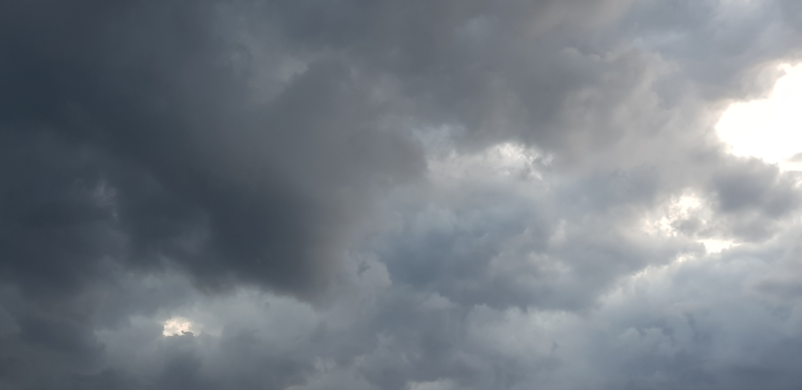
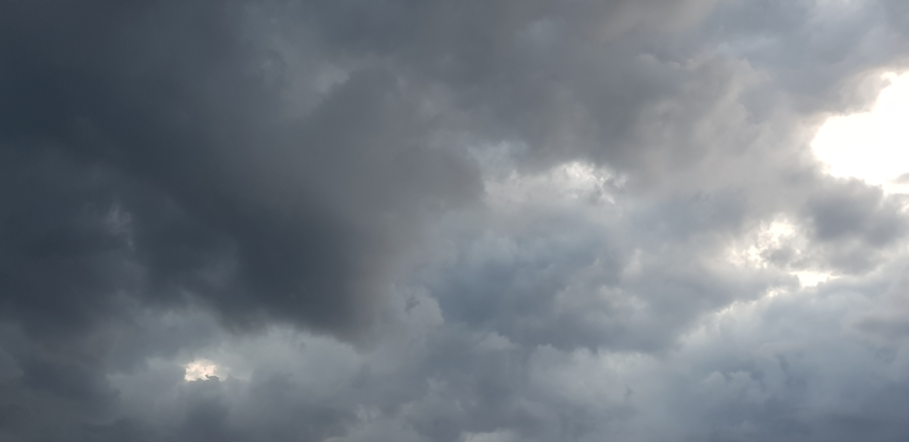
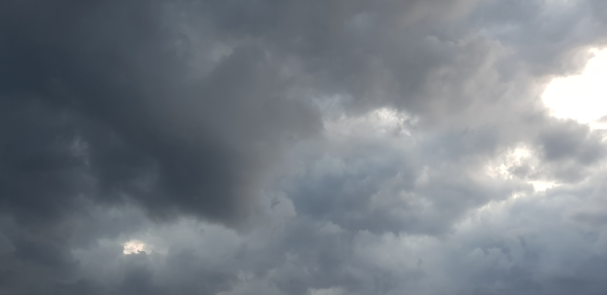

19år
 


ALLAN
Hej igen. Här hittar du allt det som jag inte ville sätta på första sidan. Glöm inte det. Det var även så här första sidan såg ut tidigare, med svart bakgrund, men jag valde att ta bort det eftersom det gav lite fel intryck tyckte jag. * * * inte viktigt om den här webbsidan övriga kontaktalternativ inte viktigt index1 ↪ men finns det fler?
* * * 2025-07-28: Den här delen av webbsidan skapades samt att hela sidan fick en stor uppdatering.